Informations frame displays general information on signal.
Informations frame displays general information on signal.
The audio widget contains, from top to bottom, a Toolbar, giving access to main playback actions, Audio Tracks, representing the signal's waveform, optional Segment Tracks, showing various levels of signal segmentation, and a time scale showing current displayed timeline range.
The scrollbar at the bottom of the widget gives indication of the overall signal length and allows to scroll within the signal.
Remark: When audio is playing, using the scrollbar causes conflicting behaviour with the automatic synchronization. It is recommended to use it only when audio is not playing.
All the tracks are synchronized along the same timeline. The cursor (in yellow) is common for all the tracks, and represents current playback position.
The controls in the top toolbar apply to all tracks. The side controls of each track apply to corresponding track only.
The user interface elements of the audio widget are detailed hereafter following this plan:
The toolbar contains the following controls and information:
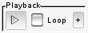 the Playback frame contains signal playback controls.
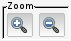 Zoom frame contains zoom controls for the waveform display.
Informations frame displays general information on signal.
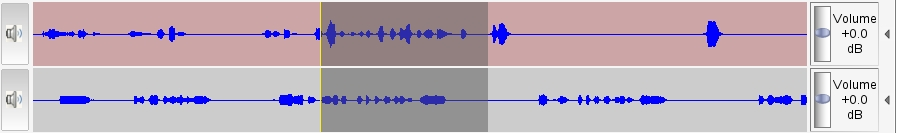
The Signal waveform displays signal peaks along the timeline. When working with a multi-channel audio file (or when 2 synchronized signal files are annotated), a waveform is displayed for each audio channel, as illustrated above.
Current audio cursor position is materialized by a yellow vertical bar. Cursor position is common to all tracks. When playback is started, the signal is played from current cursor position. A left-click on the waveform allows repositioning of the cursor.
The audio cursor defines the playback start point. It can be set by:
When signal to text synchronisation is enabled, the audio cursor will also be automatically moved to current segment start when the text cursor is placed on a new segment.
A selection can be set up by maintaining the left mouse button pressed while dragging the mouse on the waveform. The selection is materialized by a darker area. Selection duration is displayed in a small popup window and refreshed while moving cursor. This popup vanishes when cursor is placed outside the selection, and redisplayed when cursor is placed on the selection.
Current selection can be canceled by clicking on the waveform.
| When placing the cursor upon the selected area,. |
Select a signal portion, right-click on selection, and select the New turn option in the contextual menu. This will insert a new segment and a new turn for selected signal part, accordingly adjusting existing segments and turns:
Using New no speech turn option will have the same effect, but will set the turn speaker to "No speaker".
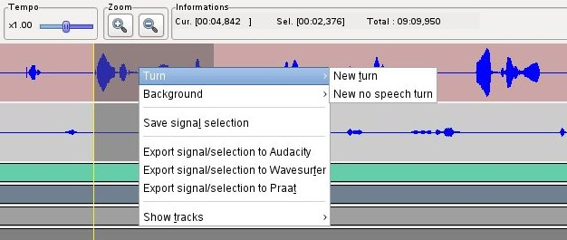
This feature complements the text widget Annotate > New turn menu option (<ctrl+T>), and should be preferred for scarse speech signals (like conversational recordings), when it is easy to visually identify speech segments through the waveform. It can then be useful to increase the waveform with the vertical zoom to enhance speech segments identification, see Audio widget track controls section.
When creating a new turn, transcription text for the current segment can be split at current text cursor position, with the text corresponding to the end of line being attached to the newly inserted segment.
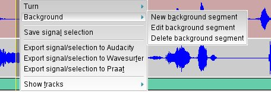
Set the cursor within the signal or select a signal portion, right-click on the waveform, and select New background option in the contextual menu; this will insert a new background starting at current cursor position, ending at:
accordingly adjusting existing backgrounds.
Through this menu, you can also edit selected background properties, or delete selected background.
Save signal selection option of the contextual menu displayed when right-clicking on a selection offers the possibility to save the selected signal part to a file, in wav format. The dialog below is popped, allowing to define a destination file.
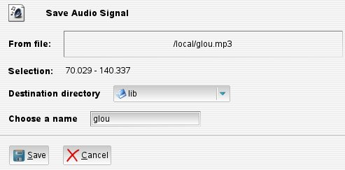Export signal/selection to ... options of the contextual menu displayed when right-clicking on a selection offers the possibility to save the whole signal (or selected signal part if any selection active) to a temporary file, in wav format, and automatically start chosen tool for this temporary file.
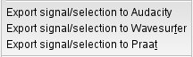The Volume ruler allows to adjust volume factor from -14dB to +14dB, independently for each track.
The 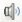 button left to the waveform allows to cut/restore volume for corresponding track (when volume is cut, track waveform is dimmed and speaker button is shown crossed with a red line).
The expander button right to the volume control allows to show or hide more track controls:
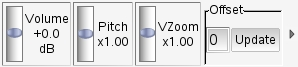 (Audio tracks controls expanded)
The following image shows section, turn and speech segments tracks, with an overlapping turn.
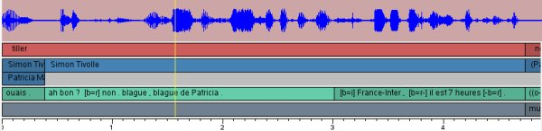
The segment area displays signal segmentation along the timeline, for the different levels of segmentation configured for current annotation conventions, typically a section / turn / speech segment scheme, as shown above.
Each track corresponds to a given level. Segments are drawn with respect to their position and size, taking into account current zoom level. Segment labels contain the section title for sections, the speaker name for turns, the transcription contents for speech segments.
When the cursor is placed upon a segment, the segment label is displayed in a popup window, which vanishes when cursor is moved (this allows to display segment contents even at zoom levels where they are not or partially visible).
Current audio cursor position is materialized by a yellow vertical bar. When the cursor reaches a segment, this segment is displayed more brightly.
When some overlapping segments have been defined, they appear stacked in segment tracks, as illustrated in above screenshot. Thus it is fairly easy to retrieve visually overlapping segments in a file by scrolling the audio widget.
Controls on the right of each segment track allow to move the audio cursor backward 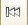 or forward 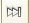 to the next segment boundary.
The expander button gives access to extra options controlling playback behaviour when reaching a segment end:
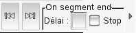 Extra playback controls for segment track
Segment boundaries can be graphically adjusted through the segment tracks. Two methods can be used to move a boundary:
The latter method generally proves to be more efficient and permits to place with a single click the boundary with accuracy to the current cursor position, which can have been set in different manners, e.g. :
When the mouse pointer is placed on a segment boundary, its shape changes, indicating that the boundary can be grabbed and moved. Depending on current window manager theme, the pointer may look like a double-arrow, or like a left-oriented or right-oriented arrow.
While dragging a segment boundary, it may happen that a "grey" zone appears between the two segments, because the neighboring segment hasn't been yet redrawn up to the new boundary. This has no impact on the final result, as the neighbor segment will be accurately displayed when the mouse button is released.
When the moved boundary corresponds also to an upper level segment track boundary (e.g. a speech segment boundary which also marks a turn boundary), then tied boundaries are moved together.
Clicking on a segment automatically selects corresponding signal portion.
| 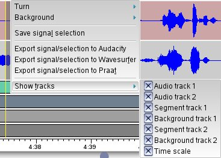 | Through the Show signal tracks submenu displayed when Right-clicking on audio widget, one can select which tracks should be displayed. A "checked" tracks is displayed, an "unchecked" isn't. |